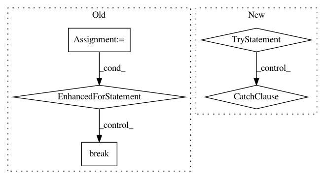

74c80d4f994c380f1baccd9d6651c233a22abf43,nilmtk/disaggregate/combinatorial_optimisation.py,CombinatorialOptimisation,train,#CombinatorialOptimisation#,40
Before Change
for i, meter in enumerate(metergroup.submeters().meters):
print("Training model for submeter "{}"".format(meter))
for chunk in meter.power_series(**load_kwargs):
num_total_states = num_states_dict.get(meter)
if num_total_states is not None:
num_on_states = num_total_states - 1
else:
num_on_states = None
self.train_on_chunk(
chunk, meter, max_num_clusters, num_on_states)
break // TODO handle multiple chunks per appliance
// Get centroids
// If we import sklearn at the top of the file then auto doc fails.
from sklearn.utils.extmath import cartesian
centroids = [model["states"] for model in self.model]
self.state_combinations = cartesian(centroids)
// self.state_combinations is a 2D array
After Change
// Check to see if there are any more chunks.
// TODO handle multiple chunks per appliance.
try:
power_series.next()
except StopIteration:
pass
else:
warn("The current implementation of CombinatorialOptimisation"
" can only handle a single chunk. But there are multiple"
" chunks available. So have only trained on the"
" first chunk!")
// Get centroids
// If we import sklearn at the top of the file then auto doc fails.
from sklearn.utils.extmath import cartesian
centroids = [model["states"] for model in self.model]
self.state_combinations = cartesian(centroids)
// self.state_combinations is a 2D array
In pattern: SUPERPATTERN
Frequency: 3
Non-data size: 5
Instances
Project Name: nilmtk/nilmtk
Commit Name: 74c80d4f994c380f1baccd9d6651c233a22abf43
Time: 2015-11-25
Author: jack-list@xlk.org.uk
File Name: nilmtk/disaggregate/combinatorial_optimisation.py
Class Name: CombinatorialOptimisation
Method Name: train
Project Name: facebookresearch/pytext
Commit Name: 900b9a7f2884aaf419e62508be7497b0ad3e1f62
Time: 2021-02-24
Author: debo@fb.com
File Name: pytext/metric_reporters/squad_metric_reporter.py
Class Name: SquadMetricReporter
Method Name: _unnumberize
Project Name: tristandeleu/pytorch-maml-rl
Commit Name: bef7dd92cbdd2c81a7d89786b9a76b011f1bc086
Time: 2018-06-19
Author: tristan.deleu@gmail.com
File Name: maml_rl/baseline.py
Class Name: LinearFeatureBaseline
Method Name: fit